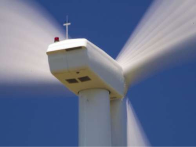
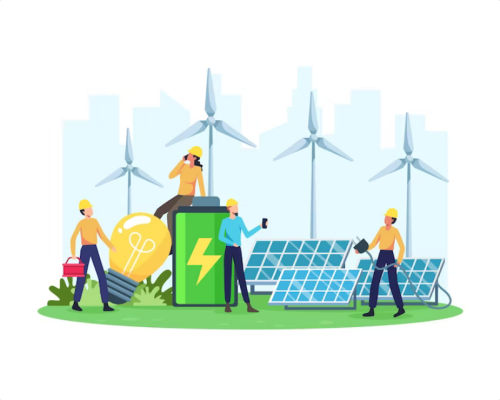

Voici le blog de Xembee !
5 mythes et idées reçues sur l’énergie éolienne
L’énergie éolienne est loin d’être une technologie récente. En effet, les moulins à vent, qui utilisent la force de
celui-ci pour moudre les céréales, ont été utilisés en France depuis le Moyen Âge. Cette technologie s’est bien sûr
développée au fil des siècles, permettant notamment le pompage de l'eau et la production d'électricité. Pourtant, de
nombreuses idées reçues perdurent encore aujourd’hui concernant cette énergie renouvelable…
Alors ensemble, nous allons démystifier certaines de ces idées reçues et expliquer pourquoi l’éolien est une solution
énergétique viable pour l'avenir.
Première idée reçue : Les éoliennes sont bruyantes

C’est probablement l’un des arguments le plus souvent repris par les détracteurs de cette technologie : les éoliennes
sont bruyantes et perturbent la tranquillité de l'environnement local. En réalité, ce n’est pas vraiment le cas.
Les éoliennes d’aujourd’hui sont conçues pour minimiser le bruit qu’elles produisent. En effet, leurs pales ont été
pensées pour réduire au maximum les turbulences et vibrations qui peuvent causer du bruit. De plus, les turbines sont
équipées de mécanismes de contrôle de bruit pour minimiser le niveau sonore émis.
Oui, les éoliennes font du bruit, mais en réalité il est comparable à celui d'un bruit de fond normal de la nature,
comme le son du vent dans les arbres ou le murmure d'un ruisseau. Enfin, la plupart des parcs éoliens sont situés dans
des zones éloignées des lieux d'habitation pour minimiser les perturbations sonores potentielles pour les résidents
locaux.
Les éoliennes ont besoin d’un vent fort pour fonctionner
Une autre idée reçue courante sur les éoliennes est qu’elles ont besoin d'un vent fort pour fonctionner. En réalité, même s’il est vrai qu’elles ont besoin d’une certaine vitesse de vent pour produire de l’électricité, celle-ci est relativement faible. En effet, un vent soufflant à environ 3 à 4 mètres par secondes suffit. Par ailleurs, les éoliennes sont conçues pour supporter des vents allant jusqu’à 25 mètres par secondes, au-delà de quoi elles se mettent à l’arrêt pour éviter les dommages.
Les avantages de l’énergie éolienne
L'énergie éolienne est une source d'énergie à la fois propre et renouvelable, qui utilise la force du vent pour produire de l'électricité. De plus en plus utilisée dans le monde entier, elle offre de nombreux avantages pour l'environnement, l'économie et la société.
Les principaux avantages de l’énergie éolienne
 L'un des principaux avantages de l'énergie éolienne est qu'elle est renouvelable. En effet, contrairement aux combustibles fossiles tels que le pétrole et le charbon, l'énergie éolienne ne s'épuisera jamais. Elle utilise la force du vent, qui est une ressource naturelle abondante et constante. De plus, les éoliennes ne produisent pas de gaz à effet de serre, qui sont l’une des principales causes du changement climatique et de la pollution atmosphérique. Cette énergie est donc un excellent moyen de réduire notre empreinte carbone.
De plus, l’éolien est une source d’énergie économique. En effet, les coûts de production ont considérablement baissé ces
dernières années, faisant de cette énergie une solution compétitive par rapport aux combustibles fossiles. D’ailleurs,
l’utilisation de l’énergie éolienne permet également de réduire notre dépendance à ces combustibles. Ainsi, les pays qui
y ont recourt peuvent améliorer leur sécurité énergétique, et réduire leur exposition aux fluctuations des prix du
pétrole et du gaz.
Enfin, les éoliennes ont une faible empreinte carbone par rapport aux autres sources d'énergie. L'installation d'une
éolienne nécessite peu de ressources naturelles et pollue peu. Par ailleurs, les éoliennes ont une longue durée de vie
et peuvent fonctionner pendant plus de 20 ans.
La création d'emplois locaux : un autre avantage à ne pas négliger
 Installer et maintenir des éoliennes en état optimal nécessitent un personnel qualifié. Ces postes comprennent des
emplois de construction, de maintenance et d'exploitation.
Installer et maintenir des éoliennes en état optimal nécessitent un personnel qualifié. Ces postes comprennent des
emplois de construction, de maintenance et d'exploitation.
Les projets d'énergie éolienne créent donc des emplois dans les communautés locales. Ils peuvent également stimuler leur
économie. En effet, les travailleurs employés dans la construction et la maintenance des éoliennes ont besoin de
logements, de services et de biens de consommation, ce qui peut avoir un impact positif sur les entreprises locales et
les industries connexes. Les recettes fiscales générées par les projets éoliens peuvent également contribuer à renforcer
les infrastructures locales et les services publics., ce qui peut stimuler l'économie et renforcer les liens sociaux.
Les perspectives de développement de l’énergie éolienne
L'énergie éolienne est l'une des sources d'énergie renouvelable qui se développe le plus rapidement dans le monde. Selon
l'Agence internationale de l'énergie, la capacité installée des éoliennes dans le monde a atteint 743 gigawatts (GW) fin
2020, soit une augmentation de 10 % par rapport à l'année précédente. Pour l’heure, la Chine est le pays qui a installé
le plus d’éoliennes, suivie des États-Unis et de l'Allemagne. L'Europe est également un marché important pour l'énergie
éolienne, avec de nombreux pays qui ont fixé des objectifs ambitieux en matière de production d'énergie renouvelable.
C’est le cas notamment de la France, dont l'énergie éolienne est également en pleine expansion. La capacité installée a
atteint 17,3 GW fin 2020, soit une augmentation de 1,2 GW par rapport à l'année précédente. Le gouvernement français a
fixé un objectif de 34 % d'électricité renouvelable dans la consommation finale d'énergie d'ici 2030, et l'énergie
éolienne devrait jouer un rôle clé pour atteindre cet objectif.